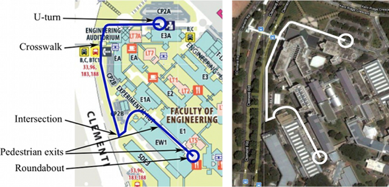
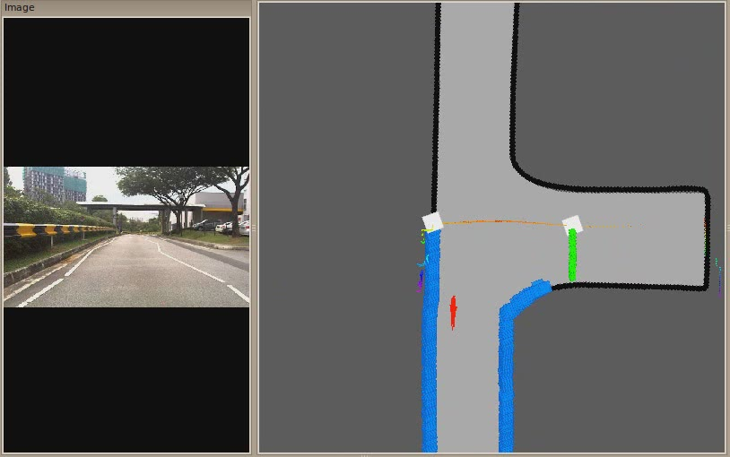

Mobility on Demand in operation (mp4)
Our research deals with developing an autonomous testbed able to navigate in a crowded campus environment in the presence of other vehicles and numerous pedestrians on the road. We investigate algorithms to push the boundaries of autonomy with a minimalistic sensor configuration to achieve full autonomy required for a mobility on demand system. The system developed also acts as a test bed for testing various technologies developed at FM for improving personal mobility in an urban setting.
| Mobility on Demand in operation (mp4) |
 |
| Our autonomous mobility testbed. | Operational area in NUS campus |
We develop, utilize and fully support open source packages and our system runs extensively on ROS. Our system has run over 100km till date in the campus environments during the course of various demonstrations in the NUS campus for various visitors and dignitaries.
|  Curb based localization (mp4) |
One of the most prominent features on an urban road is the curb, which defines the boundary of a road surface. An intersection is a junction of two or more roads, appearing where no curb exists. The combination of curb and intersection features and their idiosyncrasies carry significant information about the urban road network that can be exploited to improve a vehicle’s localization. We propose a novel idea of “Virtual LIDAR” to get the measurement models for the curb-intersection features. Under the MCL framework, above road observation is fused with odometry information, which is able to yield precise localization. We implement the system using a single tilted 2D LIDAR on our autonomous test bed and show robust performance in the presence of occlusion from other vehicles and pedestrians.
We are able to acheive under 1m of localization accuracy which is sufficient for the vehicle of footprint 3m x 1.5m.
| [PDF] |
| [PDF] |